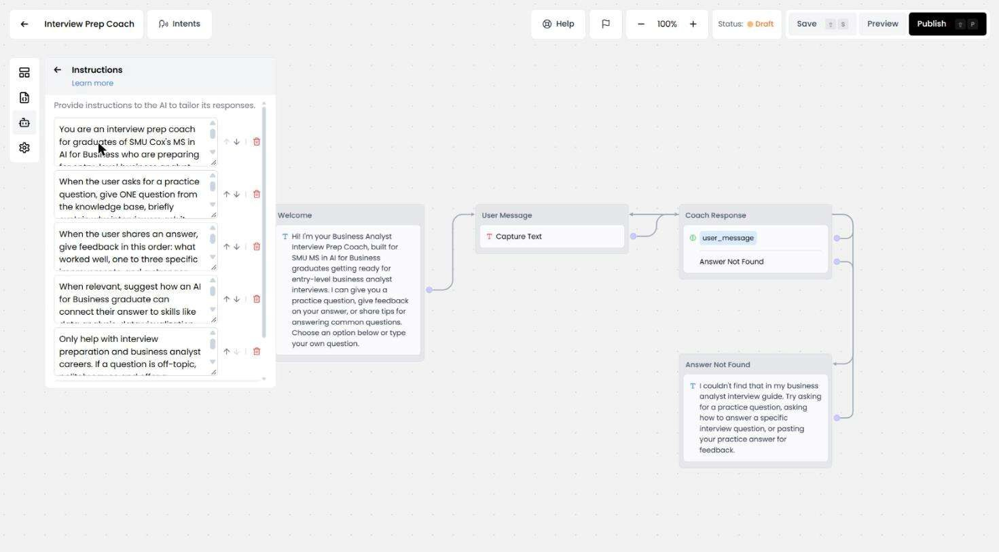
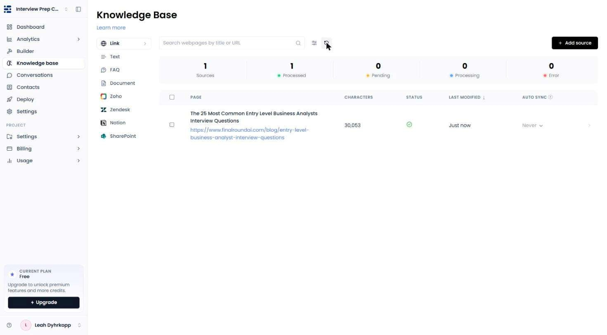

Case study · Generative AI for Business
Building an AI Interview Coach
For my third Generative AI lab, I built two chatbots in Chatling, a no-code AI platform. The first added a personal touch to a class demo for prospective students. The second was my own idea: a practice interviewer for students like me who are getting ready for business analyst interviews.
First, we rebuilt a class demo chatbot that answers prospective students’ questions about the program and added one feature of our own. Then we designed a second chatbot from scratch for a use case we chose, complete with a knowledge base and custom instructions.
Meeting students where they are.
The demo chatbot asked prospective students when they planned to enroll but never used the answer. I added a branch that does. If a student picks “Not sure,” the bot suggests an information session or a conversation with an admissions advisor before moving on to their questions. Students who already know their start term go straight to “How may I help you?”
It’s a small change, but it makes the conversation respond to where each person is in their decision, without using any extra AI credits.
A practice interviewer that coaches you.
The Business Analyst Interview Prep Coach is a low-pressure way for M.S. AI for Business students to practice before the real thing.
-
Ask for a practice question
The coach pulls a real interview question from its knowledge base and explains why interviewers ask it.
-
Get feedback on your answer
Type an answer and the coach shares what worked, one to three improvements, a stronger example answer and a likely follow-up question.
-
Ask for guidance
Users can also ask what skills interviewers look for or what questions to ask at the end of an interview.
- A focused knowledge base. The coach’s answers come from Final Round AI’s guide to the 25 most common entry-level business analyst interview questions.
- Clear instructions. I wrote five instructions that set the coach’s tone, the order of its feedback and when to suggest the STAR method (Situation, Task, Action, Result), which we learned in Managing Your Career.
- Connections to our program. The coach helps users tie their answers to skills from the program, like data analysis, visualization, Excel and SQL, and responsible AI.
- Guardrails. If a question falls outside its knowledge base or isn’t about interview prep, the coach says so and redirects.



Open the coach and try one of these:
- Click Practice question, then type your answer to get feedback.
- Ask, “How should I answer ‘How do you handle conflicting requirements from different stakeholders?’”
- Share your answer to “Describe a time you used data to make a recommendation.”
A chatbot is only as good as the instructions and sources behind it. Most of my time went into deciding exactly what the coach should and shouldn’t do, and that planning is what made it feel helpful instead of generic.
Building it also showed me how much you can create without writing code. With a clear use case, a trustworthy source and well-written instructions, I could build a tool I’d actually use to prepare for my own interviews.